Kanji część 2
Jeżeli dotarłeś do drugiej części kanji to może oznaczać, że zakończyłeś z powodzeniem część pierwszą. Jeżeli tak jest faktycznie, to gratuluję - najważniejszy jest pierwszy krok, który mam nadzieję już za Tobą.
Jak już zapewne zauważyłeś, kanji nie jest trudne, jeżeli stosujemy odpowiednie metody. Dla przypomnienia - te metody to zapamiętanie historyjki opowiadającej o danym kanji (najlepiej, jeżeli ta historyjka będzie wymyślona przez Ciebie i będzie śmieszna, absurdalna, czyli taka, którą ciężko zapomnieć); druga metoda to pisanie kanji na papierze. Ćwicz pisanie w arkuszu ćwiczeń, a z zapamiętaniem ich nie będziesz miał najmniejszych problemów.
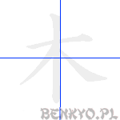
on'yomi
モク , ボク
kun'yomi
き, こー
Komentarz
Pamiętasz z wprowadzenia do pierwszej części kanji znaczek na drzewo? Taka choinka z gałęziami i konarem.
Przykładowe wyrażenia
| kanji |
hiragana |
znaczenie |
| 木 |
き |
drzewo |
| 松ノ木 |
まつのき |
drzewo sosnowe |
| 木曜日 |
もくようび |
czwartek |
| 木星 |
もくせい |
planeta Jowisz |
Komentarz
Co powstanie, jeżeli do jednego drzewa dodamy drugie drzewo? Powstanie mały lasek.
Przykładowe wyrażenia
| kanji |
hiragana |
znaczenie |
| 松林 |
まつばやし |
las sosnowy |
| 林道 |
りんどう |
droga leśna |
| 林業 |
りんぎょう |
leśnictwo |
| 小林 |
こばやし |
Kobayashi (popul. jap. nazwisko) |
Komentarz
A co jeżeli do dwóch drzew dodamy jeszcze jedno? Otrzymamy wielki las!
Przykładowe wyrażenia
| kanji |
hiragana |
znaczenie |
| 森 |
もり |
las |
| 大森 |
おおもり |
wielki las |
| 森田 |
もりた |
Morita (jap. nazwisko) |
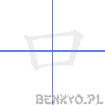
on'yomi
コウ, ク
kun'yomi
くち
Komentarz
Taki kwadracik oznacza usta. W przenośni również używane słowach takich jak "wejście" czy generalnie coś otwartego. Bardzo często stosowany jako część innych kanji.
Przykładowe wyrażenia
| kanji |
hiragana |
znaczenie |
| 口 |
くち |
usta |
| 入口 |
いりぐち |
wejście, wjazd |
| 出口 |
でぐち |
wyjście, wyjazd |
| 口座 |
こうざ |
konto w banku |
| 人口 |
じんこう |
ludność, populacja |
Komentarz
Smutne to skojarzenie, ale skoro skuteczne... To kanji przypomina grób, stąd do słowa "ziemia" jest już blisko.
Przykładowe wyrażenia
| kanji |
hiragana |
znaczenie |
| 土 |
つち |
ziemia, gleba |
| 土地 |
とち |
ziemia (obszar) |
| 土曜日 |
どようび |
sobota |
| 土台 |
どだい |
baza, fundament, podstawa |
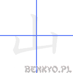
on'yomi
サン,セン
kun'yomi
やま
Komentarz
Ten "obrazek" przedstawia trzy szczyty gór w oddali, z najwyższa górą po środku.
Przykładowe wyrażenia
| kanji |
hiragana |
znaczenie |
| 山 |
やま |
góra |
| 富士山 |
ふじさん |
góra Fuji (najwyższy szczyt w Japonii) |
| 火山 |
かざん |
wulkan (ognista góra) |
| 登山 |
とざん |
wspinaczka górska |
| 山口 |
やまぐち |
Yamaguchi (japońskie nazwisko) |
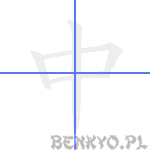
on'yomi
チュウ
kun'yomi
なか,うち,ちゅう
Komentarz
Zapamiętanie tego kanji również nie przysporzy Ci żadnych trudności - symbolizuje on podłużną rzecz przechodzącą przez środek zamkniętego obszaru - wymyśl sobie samemu, co najlepiej utrwali Ci się z tym znakiem i znaczeniem "środek, wnętrze".
Kanji to jest używane również do określenia trwania czegoś - "w trakcie".
Przykładowe wyrażenia
| kanji |
hiragana |
znaczenie |
| 中国 |
ちゅうごく |
Chiny, Kraj Środka |
| 中古 |
ちゅうこ |
rzecz używana, z drugiej ręki |
| 電話中 |
でんわちゅう |
w trakcie rozmowy telefonicznej |
| 午前中 |
ごぜんちゅう |
rano, do południa |
| 中止 |
ちゅうし |
pauza, zatrzymanie |
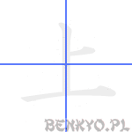
on'yomi
ジョウ,ショウ
kun'yomi
うえ, あ.がる, のぼ.る, かみ
Komentarz
To kanji oznacza "górę" jako kierunek, przciwieństwo "dołu".
Przykładowe wyrażenia
| kanji |
hiragana |
znaczenie |
| 上に |
うえに |
do góry |
| 上がる |
あがる |
wznosić się, podnosić się |
| 上手 |
じょうず |
być dobrym (w jakiejś dziedzinie) |
| 上司 |
じょうし |
szef, przełożony |
| 上る |
のぼる |
iść do góry, wspinać się |
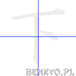
on'yomi
カ, ゲ
kun'yomi
した, しも, もとさがる,さげる
Komentarz
Jako znak przeciwny do 上, jego położenie również jest odwrócone i wskazuje w dół. Nawet boczna kreseczka jakby zwisła w dół...
Przykładowe wyrażenia
| kanji |
hiragana |
znaczenie |
| 下 |
した |
dół, poniżej |
| 地下 |
ちか |
piwnica |
| 下げる |
さげる |
obniżać, opuszczać |
| 下さい |
ください |
proszę (uniżenie) - jako prośba o coś |
| 以下 |
いか |
poniżej (w tekście) |
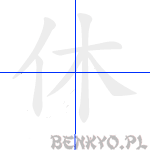
on'yomi
キュウ
kun'yomi
やす.む,
Komentarz
Przypominasz sobie kanji na osobę 人? Otóż ten znak, kiedy wchodzi w skład innego kanji i znajduje się po jego lewej stronie, przyjmuje kształt lekko spłaszczony, właśnie taki jak w tym znaku 休. A teraz wyobraź sobie, że to jesteś Ty, i leżysz sobie pod drzewem 木 w letnie popołudnie, rozkoszując się śpiewem ptaków i szklanką ulubionego napoju. To się nazywa odpoczynek!
Przykładowe wyrażenia
| kanji |
hiragana |
znaczenie |
| 夏休み |
なつやすみ |
wakacje letnie |
| 休む |
やすむ |
odpoczywać, mieć wolne (w pracy) |
| お休みなさい |
おやすみなさい |
dobranoc |
| 有休 |
ゆうきゅう |
urlop, dzień wolny od pracy |
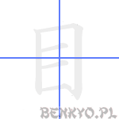
on'yomi
ボク, モク
kun'yomi
め, ま-, -め, さがん, さっか
Komentarz
Może na piewszy rzut OKA tak nie wygląda, ale jeżeli odwrócić go o 90 stopni i zaokrąglić niektóre krawędzie, to dostaniemy obrazek oka. I takie właśnie znaczenie ma to kanji.
Przykładowe wyrażenia
| kanji |
hiragana |
znaczenie |
| 目 |
め |
oko |
| 目的 |
もくてき |
cel |
| 目次 |
もくじ |
spis treści |
| 注目 |
ちゅうもく |
uwaga, oberwacja, baczenie |
| 二つ目 |
ふたつめ |
drugi (w kolejności) |
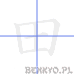
on'yomi
デン
kun'yomi
た, おか, や, とう, いなか
Komentarz
Pole ryżowe widziane z lotu ptaka. To kanji niezwykle często używane jest w japońskich nazwiskach i innych nazwach własnych.
Przykładowe wyrażenia
| kanji |
hiragana |
znaczenie |
| 田 |
た |
poletko ryżowe |
| 田中 |
たなか |
Tanaka (pop. nazwisko japońskie) |
| 成田 |
なりた |
Narita (lotnisko w Tokio) |
| 田舎 |
いなか |
wieś |
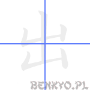
on'yomi
シュツ, スイ
kun'yomi
で.る, だ.す, -で, てん
Komentarz
Spójrz na znaczek na "górę". W tym kanji góra WYCHODZI zza innej góry, jakby chciała powiedzieć "Hej, to ja jestem wyższa!".
Przykładowe wyrażenia
| kanji |
hiragana |
znaczenie |
| 出口 |
でぐち |
wyjście |
| 出る |
でる |
wychodzić |
| 出す |
だす |
wyjmować, wyciągać |
| 出発 |
しゅっぱつ |
wyjazd |
| 出品 |
しゅっぴん |
wystawa |
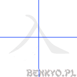
on'yomi
ニュウ, ニッ
kun'yomi
はい.る, いる, に, い.れる
Komentarz
Znaczenie tego kanji jest przeciwne do poprzedniego. Zwróć uwagę na pisownię tego kanji. Choć jest podobne do poznanego wcześniej "człowieka" 人, to kierunek pisania jest odwrotny.
Przykładowe wyrażenia
| kanji |
hiragana |
znaczenie |
| 入口 |
いりぐち |
wejście |
| 入れる |
いれる |
włożyć, wnieść |
| 入る |
はいる |
wejść, wjechać |
| 記入 |
きにゅう |
wypełnienie, wypisanie (formularza) |
| 輸入 |
ゆにゅう |
import |
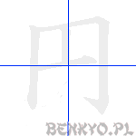
on'yomi
エン
kun'yomi
まる.い, まる,
Komentarz
Ten znaczek jest japońskim odpowiednikiem amerykańskiego dolara $, czyli po prostu oznaczeniem jena (dla przypomnienia, "jen" po japońsku czyta się "en").
Oprócz tego może znaczyć również tyle co okrąg, lub coś okrągłego, dokładnie takiego jak moneta.
Przykładowe wyrażenia
| kanji |
hiragana |
znaczenie |
| 十円 |
じゅうえん |
10 jenów |
| 円い |
まるい |
okrągły (w sensie dwuwymiarowym kształtu) |
| 円弧 |
えんこ |
łuk |
książka; prawda; rzeczywistość
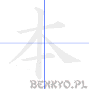
on'yomi
ホン
kun'yomi
もと, まと
Komentarz
Znaczek ten oznacza podstawę, jak też coś prawdziwego, rzeczywistego. Oprócz tego oznacza książkę. W kształcie przypomina drzewo, z dodanym korzeniem jako podstawą. Jeżeli pomyślimy sobie, że KSIĄŻKA jest PRAWDZIWĄ PODSTAWĄ wiedzy, to z łatwością zapamiętamy to kanji.
本 służy też do liczenia podłużnych przedmiotów.
Przykładowe wyrażenia
| kanji |
hiragana |
znaczenie |
| 本 |
ほん |
książka |
| 本当 |
ほんとう |
prawda |
| 原本 |
げんぽん |
oryginał, oryginalna kopia |
| 基本的 |
きほんてき |
standardowo, zasadniczo |
| 本物 |
ほんもの |
oryginał (nie falsyfikat); właściwa rzecz |
| 一本 |
いっぽん |
jedna sztuka podłużnej rzeczy |
Na tym kończymy lekcję część kanji. Myślę, że i tym razem jesteś zaskoczony, jak łatwo można zapamiętać znaki kanji. Nie rezygnuj jednak z pisania ich na kartce papieru. To najlepsza (może nawet jedyna) metoda skutecznej nauki kanji - Japończycy również uczą się w ten sposób!
Odwiedzający tę stronę najczęściej szukali:
drzewo po japońsku (65), japonskie kanji (32)
Podoba Ci się ten kurs japońskiego?
Chcesz, aby dalej się rozwijał?
Zachęcam do wsparcia!